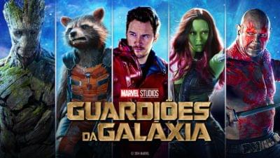

"Avatar" nos leva para o mundo fantástico de Pandora, onde um homem embarca em
uma aventura épica. Ele terá de lutar para salvar aqueles que ama e o lugar que agora chamará de lar.

- 
AVATAR "Avatar" nos leva para o mundo fantástico de Pandora, onde um homem embarca em uma jornada épica de aventura e amor. Ele terá de lutar para salvar o único lugar que ele já chamou de lar. James Cameron, o realizador vencedor de um Óscar por "Titanic", apresenta uma experiência cinematográfica imersiva, com tecnologia revolucionária e personagens interessantes em uma história emocional e intemporal.